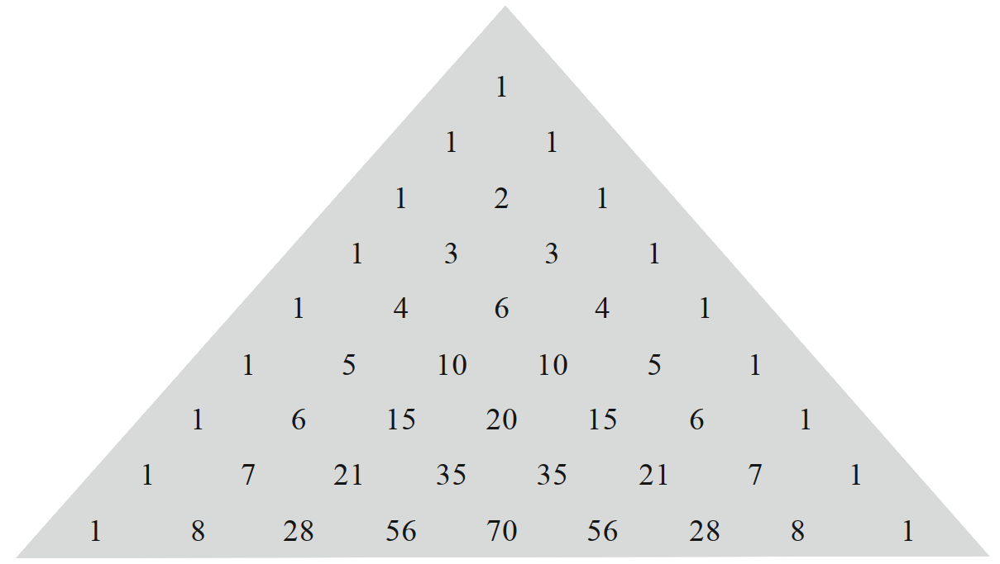

This section is aimed at students in upper secondary education in the Danish
school system, some objects will be simplified some details will be omitted.
Combinatorics
Combinatorics is the study of counting. You start counting on your fingers,
then you start cheating by doing simple multiplications, but at some point
you will encounter objects that are so big and/or complex that unmodified
grade-school math doesn't cut it anymore. That's where combinatorics steps
in.
Multiplication Principle
So, in the absence of any tricks, what we have to do is to simply
count each object and add them up, this is sometimes referred to as the
"adding principle", which feels slightly pretentious for such a simple
process. The first trick we can apply is to sequentialize the objects,
which is to categorize the objects into a series of "choices". An
example of this is drawing five cards from a deck of cards, where there
are five choices. For the first choice there are 52 options, for the
second there are 51 options, and so on until we have 48 options for the
last choice. Although the subsequent choices are dependent on the
previous ones, if I draw a king of hearts, I can't draw that again,
the number of options is completely symmetric, it drops by one each
draw regardless of what I draw. This symmetry allows us to multiply
the number of options by the number of symmetric choices to get the
total number of options. As a formula it can be stated as
$$\boxed{n=n_1⋅n_2\cdots n_m}$$
where \(m\) is the number of symmetric choices. This is called the
multiplication principle for obvious reasons. It is sometimes stated
that the choices have to be "independent", but this only applies in a
mathematical sense, i.e. that the number of options is independent of
the choices. You can have two parallel symmetric choices, where they are
independently symmetric, and then what you would have to do, is multiply
the symmetries and then add up the parallels, i.e.
$$n=n_1\cdots n_m+n_{m+1}\cdots n_{m+r}$$
where \(n_1,\ldots,n_m\) are the options for one of the \(m\) symmetric
choices and \(n_{m+1},\ldots,n_{m+r}\) are the last \(r\) symmetric
choices. This is then a mix of the addition and multiplication principles.
Counting tree
This can be visualized with a counting tree, where at each choice is a
vertex where you draw a line for each option to a new vertex representing
the new choice. This way you will get something that looks like the
branches of a tree, in the case of the five card draw, it will have an
extreme number of branches, but it could in theory be done. When drawing
a counting tree, you will have a nice visual representation of the
aforementioned symmetry, since symmetric choices will have identical
structures. The processes of the choices don't even have to be similar
to be symmetric, lets consider a choice where after we draw a card, we
roll an 8 sided die if it's a red card, or three coins in a row if it's
a black card. These two different processes are symmetric because the
number of options in each of the two choices are equal.
Permutations
Permutations is the process of changing the order of a sequence of
objects. These are three permutations of the same object, namely a string
of three characters,
$$\{abc\},\{bca\},\{cab\}$$
They are not all the permutations however, and to calculate the total
number of permutations we have the following formula
$$\boxed{P(n,r)=\frac{n!}{(n-r)!}}$$
where \(n\) is the initial number of options, \(r\) is the number of
choices, and
$$n!=n⋅(n-1)⋅(n-2)\cdots2⋅1$$
is called the factorial. For a short argument, consider each permutation
as a choice of objects where we can use the multiplication principle to
estimate the total number of choices. For the first choice we have the
full number of objects, and for each subsequent choice, our number of
options reduces by one until we've performed \(r\) choices, i.e.
\begin{align}
P(n,r)=&n⋅(n-1)\cdots(n-r+2)(n-r+1)\\
=&n⋅(n-1)\cdots(n-r+2)(n-r+1)\frac{(n-r)(n-r-1)\cdots2⋅1}{(n-r)(n-r-1)\cdots2⋅1}\\
=&\frac{n!}{(n-r)!}
\end{align}
∎
Permutations can be used to count the total number of options in a number
of strictly sequential choices, i.e. where the order of the choices
matters. An example of this is playing Texas Hold-em, where the cards
are revealed in a specific order which has a high impact on the play of
the game. An instance, in the same game, where the order does not matter
are the hole cards, i.e. the cards that are dealt to you personally face
down. Whether you got a king of hearts and a king of spades, or the other
way around has no impact on your hand or the play of the game in general.
This is where combinations come in.
Combinations
Permutations are not widely known and have relatively few uses since
it can only be used in cases where the order of the choices is important
and many, maybe mosts, widely considered use-cases are independent of
the order. In this case we use combinations, which is the number of
total options when the order of the choices doesn't matter, and can
be calculated as follows
$$K(n,r)=nCr=\boxed{{n\choose r}=\frac{n!}{r!(n-r)!}}=\frac{P(n,r)}{r!}$$
For a short argument, consider the previously mentioned five card draw.
If the order matters, we have
$$P(52,5)=\frac{52!}{47!}=311875200$$
total number of options. But if we remove the condition that the order
matters, we have counted the same hand multiple times. Lets consider
the 1 through 5 of hearts, we have counted all these options that are
really the same option when the order is removed
$$\{1,2,3,4,5\},\{2,1,3,4,5\},\{2,3,1,4,5\},\{2,3,4,1,5\},\{2,3,4,5,1\}$$
and this is just a fraction of the total permutations of the hand. To
figure out how many times we've counted each hand, we can take it's
total permutations, namely
$$P(5,5)=\frac{5!}{(5-5)!}=5!=120$$
so each hand has been counted 120 times, so in order to remove the order
we have to factor out 120, which is done by division. In general, to get
the combinations, we divide the permutation of the options by the permutation
of the choices, which is the last equality in the formula.
Pascal's Triangle
Pascal's triangle is a diagram that shows the binomial coefficients
for various values of \(n\) and \(r\) and it turns out that these are
exactly the same values as the number of combinations of these options
and choices. Therefore Pascal's triangle can be used to determine
combinations, but it's mostly just practical for a relatively low
number of options. To use Pascal's triangle to determine combinations
you go down to the \(n\)'th row, starting from \(n=0\) and then you
find the \(r\)'th column, again starting from \(r=0\) and what you've
found is \({n\choose r}\). To construct Pascal's triangle, you start
with a 1 on the first row and column, and the last column. Then you
take two adjacent numbers, add them up, and it becomes the number in
that position in the next row, see picture,

this process is formalized in the first formula in the next section.
Formulas
Combinations have a series of useful properties, the first of which is
that
$$\boxed{{n\choose r}={n-1\choose r}+{n-1\choose r-1}}$$
to observe this consider that
\begin{align}
{n-1\choose r}+{n-1\choose r-1}=&\frac{(n-1)!}{r!(n-1-r)!}
+\frac{(n-1)!}{(r-1)!(n-1-r+1))!}\\
=&\frac{n!}{r!(n-r)!}\frac{n-r}{n}+\frac{n!}{r!(n-r)!}\frac{r}{n}\\
=&{n\choose r}\left(\frac{n-r+r}{n}\right)\\
=&{n\choose r}
\end{align}∎
Another formula is that
$$\boxed{r{n\choose r}=n{n-1\choose r-1}}$$
which will be useful in certain topics. It can be argued as follows
\begin{align}
r{n\choose r}=&\cancel{r}\frac{n!}{\cancel{r}!(n-r)!}\\
=&n\frac{(n-1)!}{(r-1)!(n-1-(r-1))!}\\
=&n{n-1\choose r-1}
\end{align}
∎
An interesting consequence of the definition of binomial coefficients
in this section yields another interesting
formula,
$$\sum_{i=0}^n(-1)^{n-i}{n\choose i}=0$$
which states that if you add up a row in Pascal's triangle with alternating
signs, it adds up to 0. This is pretty obvious in rows with an even number
of elements, since it's symmetric, but not as obvious in the other half of rows.